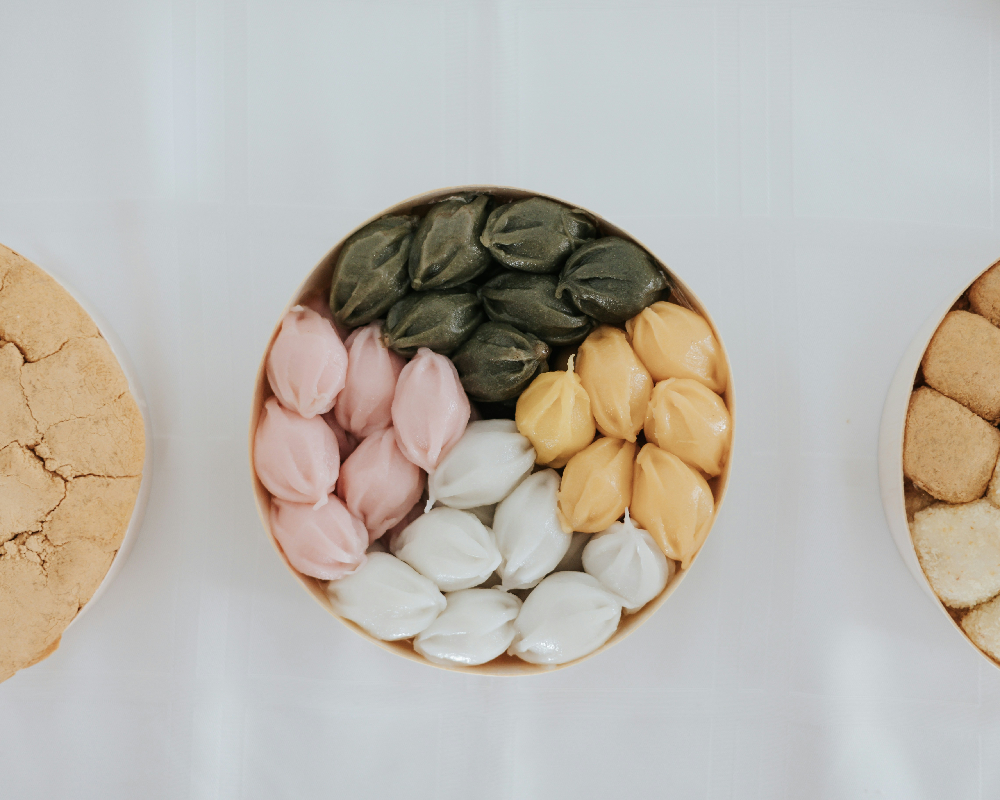

A rice cake be any kind of food item made from rice that has been shaped, condensed,
or otherwise combined into a single object.
A wide variety of rice cakes exist in many different cultures in which rice is eaten.
Common variations include cakes made with rice flour, those made from ground rice,
and those made from whole grains of rice compressed together or combined with some other binding substance.

Steamed rice cake in an earthenware steamer was the oldest principal food for Koreans before sticky rice took over upon the invention of the iron pot.
Now, there are hundreds of different kinds of Korean rice cake or tteok eaten year round.
In Korea, it is customary to eat tteok guk (tteok soup) on New Year's Day and sweet tteok at weddings and on birthdays.
It is often considered a celebratory food and can range from rather elaborate versions or down to the plain-flavored tteok.
Rice cakes are chosen for particular occasions depending on their color and the role they play in Korea's traditional yin-yang cosmology.
Copy